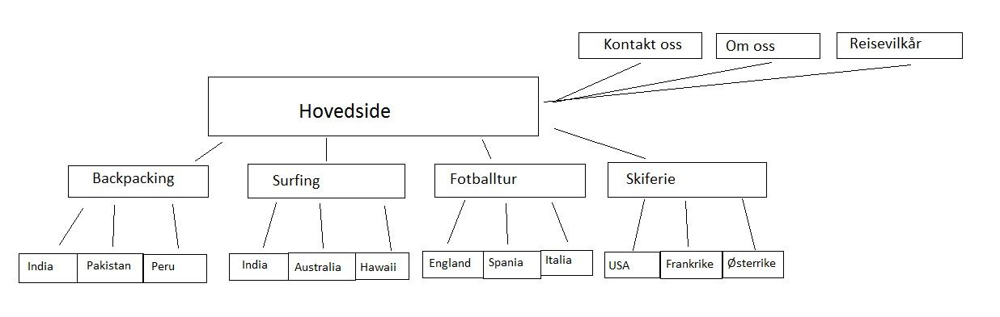
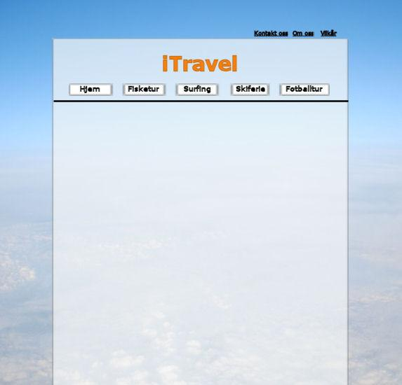

Skisse til ferdig nettsted, evaluering så langt, begrunnelse for designvalg , Krav til siden og skisse av sluttrapport
Skisse til ferdig nettsted
Nettstedkart

Dette er nettstedkartet til siden vår. Vi har en hovedside med en PHP-meny der man først velger hvilken aktivitet man er interessert i. Etter man klikker, kommer det en dropdown-meny der kunden kan velge destinasjon, i form av forskjellige land. Når man velger land, kommer man inn på siden for f.eks. surfing i Australia, der det står informasjon om turen, reisemålet og diverse annen relevant info. Videre kan kunden velge dato han/hun vil reise og skrive inn kontaktinformasjon om seg selv.
Øverst på siden er det kontaktinformasjon om oss, annen informasjon og reisevilkår.
Utkast til design

Dette er et utkast til hvordan siden vår vil se ut. Alle sidene vil ha samme layout og dette vil ligge i bunn på alle sidene. Merk at det kun er et utkast, og at prosjektsiden sannsynligvis vil ende opp forskjellig fra dette.
Evaluering av prosjektarbeidet så langt
Vi startet dette prosjektet uten at noen kjente hverandre på gruppa. Det kan være en utfordring å komme igang som gruppe da, men i dette tilfellet gikk det som smurt. Lite dødtid med tørrprat og ubesluttsomhet – her gikk de rett på sak! Det tok ikke lang tid før vi ble varme i trøya, og samarbeidsmaskinen som er gruppe 28 begynte å kjøre på.
Vi er alle delaktige i den kreative prosessen og kommer med forslag og innspill om vi har noe på hjertet. Gruppemedlemmene er åpne for forslag og det sitter ingen gruppeleder og trumfer igjennom sine forslag/legger ned veto mot andres forslag. Vi la alle fram våre forslag om hvilke temaer vi kunne tenke oss å arbeide med og hvordan layoutet på gruppesiden skulle fremstå. Vi ble enige om ett layout, krummet nakken og dro tauet i samme retning, både store og små. Alt i alt er vi meget fornøyde med hvordan dynamikken i gruppa har fungert i dette aspektet av prosjektarbeidet.
Når det gjelder selve produktiviteten, har det gått sånn tålelig bra. Vi prøvde å få igang GIT helt fra begynnelsen, men det viste seg å ha en særdeles bratt læringskurve før den flatet litt ut. Det gikk en del ressurser, dvs tid og arbeidskraft, på å forstå det. Vi fikk det jo til etterhvert, og prosjektet fikk vi jo levert også, så det gikk jo i orden. Et følgeproblem som følge av GIT-problemene var at det ble litt vanskelig å jobbe hver for oss, så det ble kanskje litt feil arbeidsfordeling. Det satt ofte én person og skrev/kodet, mens resten satt rundt og ’bare’ drev rådgivning. Det optimale hadde jo vært om vi alle hadde skrevet/kodet hver vår side, og bare lastet det opp med GIT til samme område, da hadde det vært mye mer tidseffektivt. Men det kan vi legge bak oss, nå som vi har fått det til å virke.
Fremdriftsplanen laget vi ganske tidlig i prosjektperioden, og det blir da naturligvis vanskelig å holde seg til den 100%, spesielt ettersom vi da ikke visste noe særlig om antall leveranser, når vi fikk de/skulle levere de og hva de innebar. Det er derfor noen feil på den i forhold til vår reelle fremdrift, men de er heldigvis på riktig side. Vi ligger noen dager/uker foran planen, og det er jo alltid positivt. Vi kommer til å modifisere på fremdriftsplanen og andre styringsdokumenter nå som det er lettere å forholde seg til leveransen og viktige datoer.
Underveis har det vel egentlig kun vært GIT-problemene som har påvirket arbeidsprosessen i nevneverdig grad. Som nevnt over, så førte det til at effektiviteten var litt dårligere, og vi kunne kanskje hatt mer tid til å finpusse dokumentene hvis det hadde fungert fra starten av. Ellers har det vært lite overraskelser og det meste har gått på skinner.
Begrunnelse for designvalg
Vi designer en reiseside der det er meningen at folk skal kunne bestille pakketurer som inkluderer diverse aktiviteter. Da er det særdeles viktig at siden er oversiktlig og enkel å forstå. Spesielt bestillingssiden skal være umulig å misforstå og skrive inn feil informasjon i. Vi vil ikke ha masse flash og grafikk på siden, det skal være en solid og ren side, som samtidig ser elegant ut.
Målgruppen vil i hovedsak være fra personer over 16 år. Personer med funksjonsnedsettelser er vel i hovedsak ikke vår primære målgruppe, men vi vil følge universell utforming slik at alle skal kunne besøke siden og lese gjennom alt uten å ha noen problemer.
Siden skal ha et relativt enkelt design, men samtidig solid slik at det ser profesjonelt ut og vekker tillit fra brukeren. Skriften skal være i kontrast til bakgrunnen, slik at brukeren ikke skal ha vanskeligheter med å lese det som står. Menyen er plassert øverst og sentrert for å være i fokus for brukeren. Vi jobber ut ifra ideén om at man skal navigere seg hvor som helst på siden innen fire klikk fra hovedsiden.
Vi vil ha noen bilder på sidene til de forskjellige destinasjonene og aktivitetene, for det er en viktig del av en reiseside. Folk må få se varene de kjøper. I tillegg vil vi følge noen generelle regler for optimalisering for web, og da tekst. Det nevnte F-mønsteret bør følges såfremt det er mulig, samt korte, konsise setninger og avsnitt.
Krav til siden
Hva slags teknologi og standarder skal brukes/følges på siden?
- Vi skal bruke HTML og den skal validere etter HTML5-standarden.
- Layoutet skal gjøres ved hjelp av CSS-stilark, og skal validere som CSS 2.1
- PHP skal brukes til bestillingsskjemaer og menyer
Funksjonalitet på sidene?
- Vi skal ha en header og footer som følger på alle sidene. På headeren skal vi ha logoen vår, navnet og menyen. Footeren skal ha lenker til automatisk validering av sidene, i tillegg vil vi skrive at siden tilhører oss
- Fra menyen skal du kunne velge hvilken aktivitet du vil dra på og hvilke destinasjoner vi tilbyr aktiviteten i
- Hver enkelt side skal ha så liten størrelse som mulig, slik at lasting av siden går raskest mulig
Hvordan sikre brukervennlighet/universell utforming?
- Siden skal ha kontrast mellom skrift og bakgrunn, slik at det ikke blir noen vanskeligheter med lesing av siden
- Vi skal bruke relative verdier i stilarkene slik at det er mulig å zoome inn uten at alt skalerer feil
- Bilder skal ha en alternativ tekst
- Vi vil at man skal kunne nå hvilken som helst side innen fire klikk fra hovedsiden
- Riktig bruk av HTML-tags, slik at strukturen blir korrekt
- Et alternativt stilark for svaksynte
- Inkludere en brødsti på siden, slik at besøkende vet hvor de befinner seg
Skisse av sluttrapport
Sluttrapporten skal inneholde noen generelle dokumenter som innholdsfortegnelse, forord og konklusjon. I tillegg skal vi ha selve rapporten som har noen hovedpunkter med undertemaer som f.eks.:
- Planlegging
- Problemstilling
- Mål
- Fremgangsmåte
Innholdsfortegnelsen skal inneholde trykbare linker til alle punktene, inkludert undertemaene. Vi vil skrive en skisse av innholdsfortegnelsen lengre ned på siden. Den skal være oversiktlig og lett å lese og forstå.
Forord skal inneholde blant annet problemstillingen og målene våre. Vi vil forklare litt hvordan tilnærmingen vår til oppgava var fra begynnelsen. Vi skal beskrive siden vi har laget og hvorfor valget falt på nettopp den løsningen. På mange måter vil dette være et kort sammendrag av rapporten, med hovedvekt på forberedelsene.
Konklusjon skal være en oppsummering av hele prosjektprosessen, fra første møte til siste punktum i sluttrapporten. Vi vil gå gjennom hvordan vi føler at vi har svart på problemstillingene og målene våre. Svarte det ferdige produktet og prosessen til våre forventninger?
Selve rapporten skal være en rekke hovedpunkter med underpunkter som går nærmere inn på temaene de omhandler. Hovedpunktene skal kun være overskriften, så vil undertemaene ta for seg forskjellige emner innenfor overskriften. Alle skal være klikkbare lenker som gjør at vinduet umiddelbart går ned til det emnet du bestemte deg for.
Redegjørelse for optimalisering for web
Rapporten skal ha klikkbare lenker i innholdsfortegnelsen, slik at den er lett å navigere seg i. Vi vil også inkludere en ”tilbake til toppen”-lenke i hvert tema. Skriften skal være i kontrast til bakgrunnen, så det skal være enkelt å lese uten å anstrenge seg. Vi vil også prøve å skrive det viktigste i teksten øverst fra starten, siden det er det folk flest leser. Desto lengre ned og ut på linja det blir, desto mindre sannsynlig er det at det blir lest. Også kalt F-prinsippet.
Ellers vil vi bruke generelle regler når det gjelder skriving av tekst, dvs. avsnitt, kortest mulig setninger, enklest mulig, men samtidig konkrete ord etc.
Utkast til innholdsfortegnelse:
- Forord
- Punkt 1 – Introduksjon
- Første møte
- Valg av oppgave
- Problemstilling
- Målformuleringer
- Punkt 2 – Samarbeid
- Arbeidsfordeling
- Arbeidsmetoder
- GIT
- Uforutsette hindringer
- Oppmøte
- Punkt 3 – Gruppesiden
- Tilnærming
- Arbeidsprosessen
- Design
- Koding
- Punkt 4 – Prosjektsiden
- Tilnærming
- Arbeidsprosessen
- Design
- Koding
- Punkt 5 - Dokumenter
- Styringsdokumenter
- Midtveisrapport
- Sluttrapport
- Konklusjon
- Kilder
Siden er laget av og oppdateres av gruppe 28.